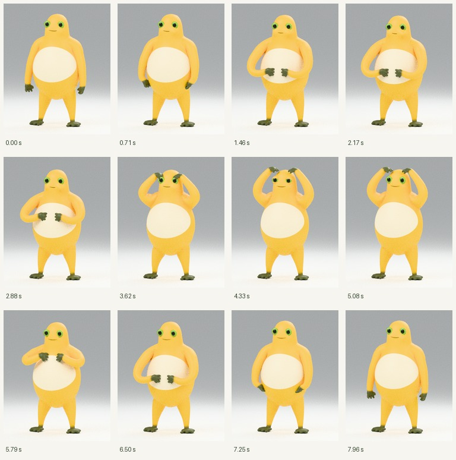
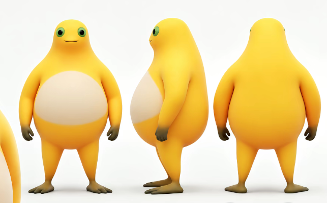

奶蛙 · 站姿预览
对照设计图查看圆润的身体、向内收的手掌与短手指。试试“扶肚摸头”，暂停后拖动进度检查肩、肘和手腕的衔接。
正在加载模型…
拖动旋转 · 滚轮缩放 · 双指缩放。也可用上方视角按钮查看。正面适合对照设计图，侧面和背面可检查身体轮廓；“手部近景”会暂停动作并回到站姿，便于查看掌根与手指。
正在读取骨架与动作…
这是可编辑的 3D 建模版本，现有八段动作供检查骨架和变形。新增的“扶肚摸头”参考了视频中的扶腹、抬臂和回位姿态。键鼠定位参考用于检查手部接触；实际桌宠的道具适配、动态接触和外部 GLB 导入仍需后续接入。
查看手部与动作渲染
真实模型渲染，便于对照上方可交互预览。


展开原始设计图
